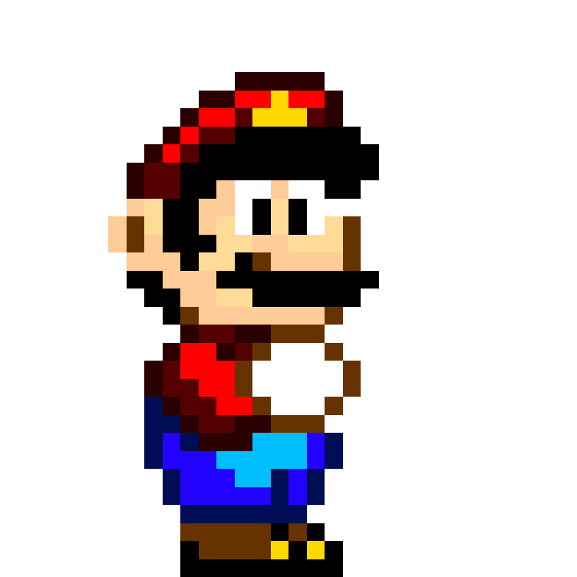
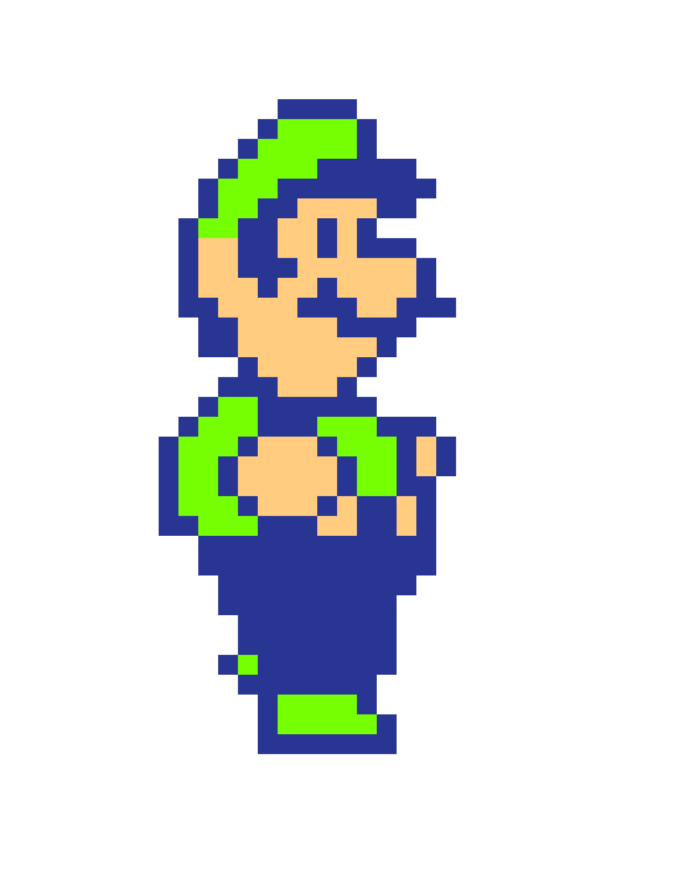
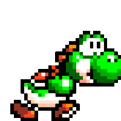
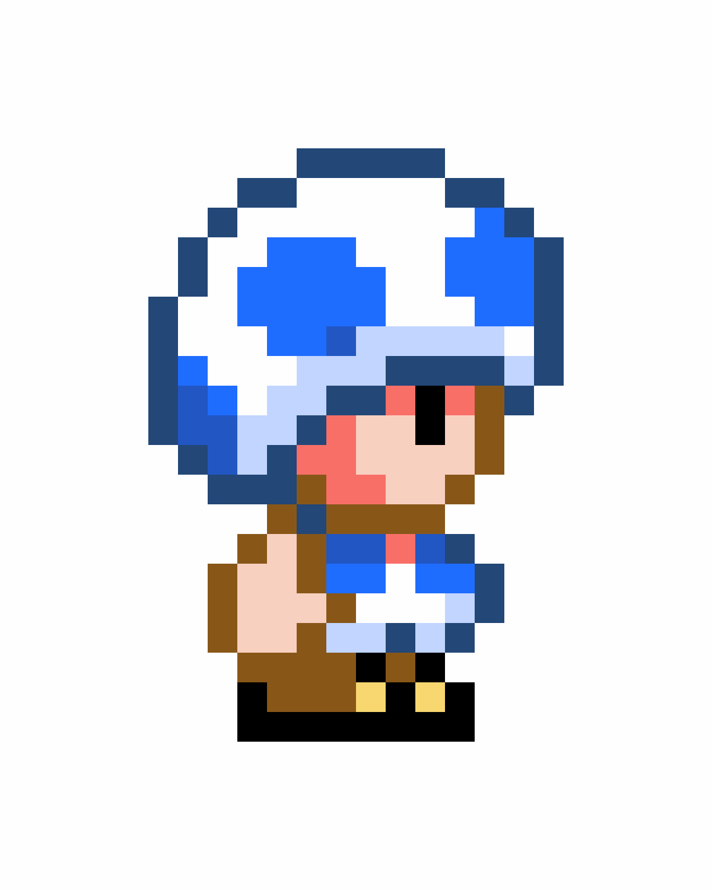

ESPAÇO — BLOCO TEXTO 01
O Legado do SMBX
Super Mario Bros. X foi muito além de um jogo de plataforma.
Sua proposta permitia que os próprios jogadores criassem
fases, mundos e aventuras, utilizando personagens,
elementos e mecânicas inspirados no universo Mario.
A liberdade de criação tornou o SMBX uma experiência
especial. Cada jogador poderia explorar conteúdos
desenvolvidos por outras pessoas ou utilizar as ferramentas
disponíveis para construir suas próprias aventuras.
O projeto ajudou a mostrar que um jogo também pode ser
uma plataforma de criação, colaboração e compartilhamento.
Seu legado está justamente nessa possibilidade de transformar
jogadores em criadores.

ESPAÇO — BLOCO TEXTO 02
Uma Ideia que Continua
Meu contato com o SMBX aconteceu ainda na infância.
Naquela época, a possibilidade de explorar fases criadas
por outras pessoas e descobrir diferentes maneiras de
brincar com o universo Mario despertava minha imaginação.
O que mais me marcava era perceber que não existiam apenas
as aventuras tradicionais: havia um universo de possibilidades
construído pela criatividade de uma comunidade inteira.
Com o passar dos anos, aquela experiência permaneceu como
uma referência. A vontade de não apenas jogar, mas também
criar, modificar e expandir aquele universo acabou se
transformando em uma ideia: trazer essa experiência para
uma nova etapa.

ESPAÇO — BLOCO TEXTO 03
SMBXU — Uma Nova Jornada
O Super Mario Bros. X Ultimate (SMBXU) é um projeto pessoal
inspirado no legado do SMBX. Sua proposta é explorar maneiras
de modernizar e expandir a experiência original, preservando
a liberdade criativa que tornou o jogo tão especial.
A ideia é construir uma experiência que reúna jogo e criação
em um mesmo ambiente, permitindo desenvolver fases, mundos,
personagens e novos elementos que possam ser utilizados
diretamente nas aventuras.
Mais do que atualizar um jogo, o SMBXU representa a vontade
de dar continuidade a algo que marcou minha infância,
utilizando os conhecimentos que venho adquirindo em
programação e desenvolvimento de jogos.

ESPAÇO — BLOCO TEXTO 04
Visão e Desenvolvimento
O objetivo do SMBXU é desenvolver uma plataforma que
amplie as possibilidades de criação e personalização.
Entre as ideias estão um editor de fases integrado ao jogo,
novos personagens, blocos, NPCs, itens e elementos
personalizáveis.
Também fazem parte da visão sistemas de scripts para
comportamentos personalizados, organização de conteúdos
criados pelos jogadores e integração entre o editor e
a experiência principal do jogo.
O projeto ainda representa uma jornada de aprendizado.
Cada sistema exige pesquisa, planejamento, experimentação
e desenvolvimento. A intenção é transformar essa visão
gradualmente em algo jogável, funcional e cada vez mais
completo.